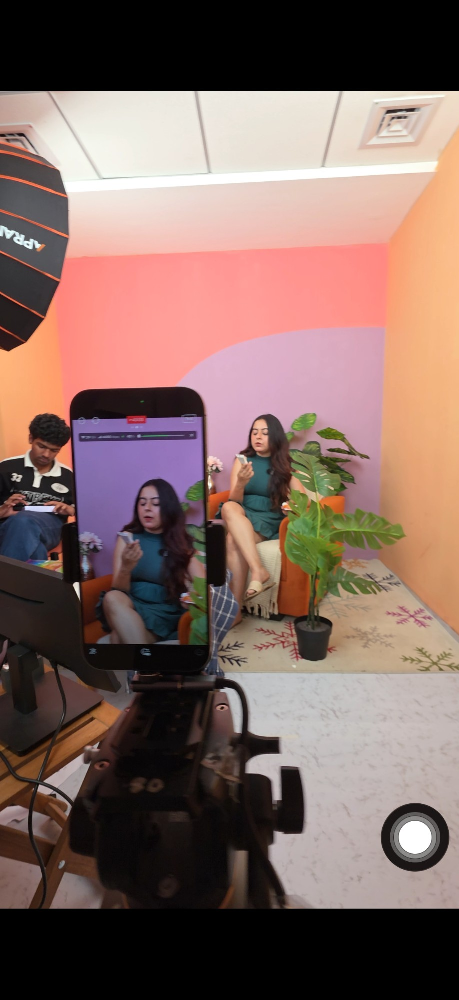

Engineer by training, creative by nature. Currently trying 50 new careers to find the one that was always mine.

For six years I shipped high-value products at Microsoft and Uber. The kind of work that pays well, looks great on a résumé, and quietly puts a lid on the part of you that wants to make something new.
In January I walked away. Started a rule: try a new career every two weeks until something clicks. Four months in, I'm at seven: florist, muralist, exhibition designer, event marketer, telemarketer, community host, live-commerce host. Somewhere in the middle of them, the fog lifted.
Now I know exactly what I want. To bring everything I've collected, an engineer's discipline, a maker's taste, and the hustle it takes to pull off seven careers in four months, to a team that's building something real.
Experience
Education
Lovely Professional University. Placed at Microsoft with a ₹45 LPA offer, the highest my college had ever seen. The only one of its kind. That's the pattern that's followed me since: drop me into a room I don't belong in, I'll figure out how to earn my place.
Seven Careers, Four Months
Florist
Sourced wholesale, sold at weekend markets. Broke even on day 8.
Exhibition Designer
Turned a SaaS startup's product vision into physical artifacts clients could touch.
Event Marketer
Helped a food chain break into wedding catering. Built the pitch process and prospect outreach from scratch.
Community Host
Co-hosted a Bangalore weekly club. 20 strangers walked in. I was the one who made them friends.
Mural Artist
Traded a heritage mural in Jaisalmer for 10 days of free stay. Finished on deadline.
Telemarketer
Live on Flipkart most days. Selling products, managing chat, watching live commerce up close.
Live-Commerce Host
On-camera for ~2 hours a day. Learned the script, the cadence, the math.
What I'm Looking For
Bengaluru-based or remote-friendly. Teams building in consumer, D2C, food, or creator economy.
Skills / Tools